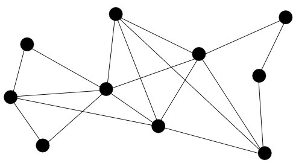
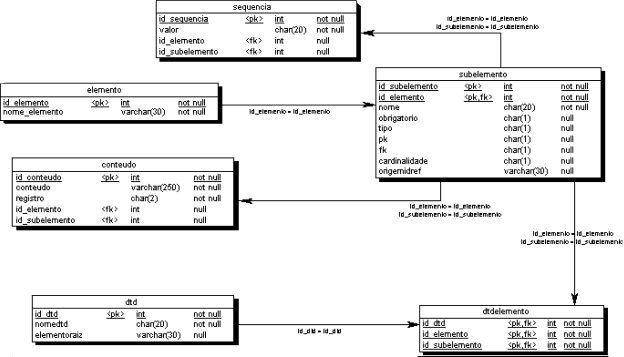

Figura primitiva
Banco de dados é um conjunto de informações estruturadas. Assim garantindo certas características como armazenamento e manipulação. Pode ser simples como uma lista de compras ou complexos como o sistema de gerenciamento de estoque do mercado.
Sistema Gerenciador de Banco de Dados
SGBD é um conjunto de ferramentas que permitem controlar acesso, manipular dados e visualização.
Tipos de Banco de Dados
Ao longo do tempo foi se aprimorando a maneira de organizar e trabalhar os dados.
Hierárquico
Tipo dos anos 60's surgiu para suprir demandas de projetos de fabricação. Dentro da hierarquia um segmento suprir é reconhecido como pai e o segmento diretamente ligado ao mesmo como filho. (1:M)

Rede
Sendo o modelo de rede um antecessor do modelo relacional e o um sucessor do modelo hierárquico este surge com a necessidade de um registro filho possuir diversos pais gerando um modelo M:M.
Relacional
Modelo mais utilizado no mundo até hoje nascido nos anos 70's tem como principal característica um banco em forma de tabelas que se relacionam.
Em 80's o SQL se torna o padrão mundial para modelos relacionais.
Banco Multimidia
Em 90's surgem as primeiras propostas de base de dados Web com vies para modelo orientado a objetos.
Fluxo de Mineração
Anos 1999< ORM's
- XML
- Integração de dados
- Computação em nuvem
- Mineração de dados
- Redes Sociais
- Sistemas de informações globais